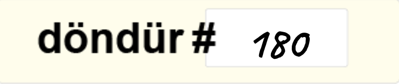
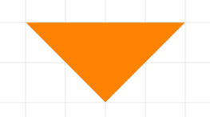
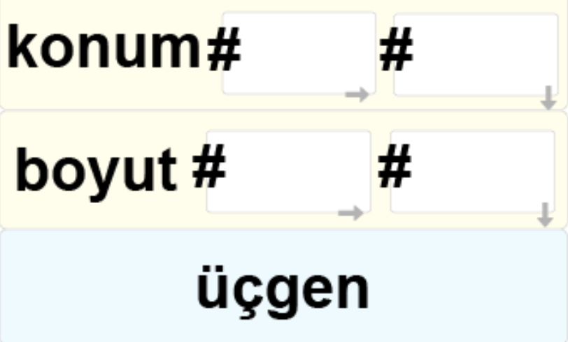

Tangram, 7 geometrik parçayı bir araya getirerek çeşitli şekiller ortaya çıkarmaya dayalı bir zeka oyunudur.

Hedeflenen form, geometrik bir şekil, hareket halindeki bir insan figürü, hayvan figürü, alfabedeki bir harf ya da benzeri bir şey olabilir.
1) Tangram şekillerini Kart-ON komutları ile oluşturalım.
2) İlk önce "Koordinat Sistemi Kağıdında" şekillerin nasıl çizilmesi gerektiğini belirleyelim.
3) Sonra Kart-ON komutlarını hazırlayalım ve uygulamada programlayalım.
Şekildeki tangramı Kart-ON komutlarını doğru sıraya dizerek çizgili kağıt üzerinde çizelim. Örnek olarak turuncu üçgeni çizmek ile başlayalım.
1) Kendinden sonra gelen şekillerin rengini değiştiren "doldur" komutuna yazacağımız 30 değeri turuncu bir renge ulaşmamızı sağlayacaktır.

2) Kendinden sonra gelen şekilleri 0-360 arası bir değerde olan girdi kadar döndüren "döndür" komutuna yazacağımız 180 değeri üçgenin istediğimiz şekilde ters dönmesini sağlayacaktır.

3) Son olarak üçgen yaratmak için konum ve boyut bloklarına değerlerini yazarak üçgenimizi elde edebiliriz.
Bu örnekten yararlanarak diğer şekillerin komutlarını hazırla. Şekillere tangramdaki gibi birbirleriyle bitişik olacak şekilde konum ve boyut değerleri vermelisin.

Şekildeki tangramı çizmek için hangi komutları kullanman gerektiğini bulabilir misin? Aşağıdaki örnekteki komutları sırasıyla kullandığımızda farklı açılarda, renklerde ve büyüklüklerde üçgen ve dikdörtgenler elde edebiliriz.
TEPEDEKİ YEŞİL ÜÇGENİ YAPMAK İÇİN GEREKLİ KOMUTLARI DOLDUR: